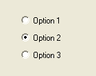

OptionGadget()
语法
Result = OptionGadget(#Gadget, x, y, Width, Height, Text$)概要
Creates an OptionGadget in the current GadgetList.
参数
#Gadget A number to identify the new gadget. #PB_Any can be used to auto-generate this number. x, y, Width, Height The position and dimensions of the new gadget. Text$ The text to display.
返回值
Returns nonzero on success and zero on failure. If #PB_Any was used as the #Gadget parameter then the return-value is the auto-generated gadget number on success.
备注
The first time this function is called, a group is created and all following calls of OptionGadget() will add a gadget to this group. To finish the group, just create a gadget of another type. These kind of gadgets are very useful as only one gadget from the group can be selected at any time.
A 'mini help' can be added to this gadget using GadgetToolTip().
示例
If OpenWindow(0, 0, 0, 140, 110, "OptionGadget", #PB_Window_SystemMenu | #PB_Window_ScreenCentered) OptionGadget(0, 30, 20, 60, 20, "Option 1") OptionGadget(1, 30, 45, 60, 20, "Option 2") OptionGadget(2, 30, 70, 60, 20, "Option 3") SetGadgetState(1, 1) ; set second option as active one Repeat : Until WaitWindowEvent() = #PB_Event_CloseWindow EndIf

参阅
GetGadgetText(), SetGadgetText(), GetGadgetState(), SetGadgetState(), CheckBoxGadget()
已支持操作系统
所有